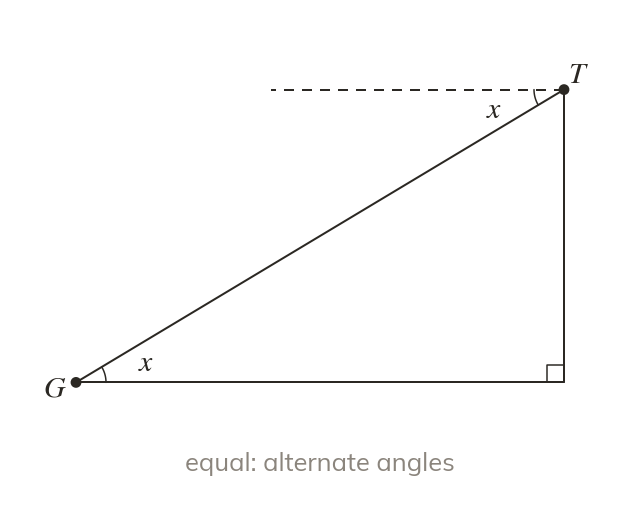

Elevation and depression
Elevation is measured upward from the horizontal and depression downward. Between the same two points the two angles are equal, as alternate angles.
The angle of elevation is the angle measured upward from the horizontal to a point above - for example, from a person on the ground looking up at the top of a building. The angle of depression is the angle measured downward from the horizontal to a point below - for example, from someone at the top of the building looking down at the person on the ground. Both angles are always measured from the horizontal, never from the ground or from a wall. Because the horizontal line at the person's eye level and the horizontal line at the top of the building are parallel, the angle of elevation from the ground to the top and the angle of depression from the top to the ground are equal - they are alternate angles between two parallel lines.